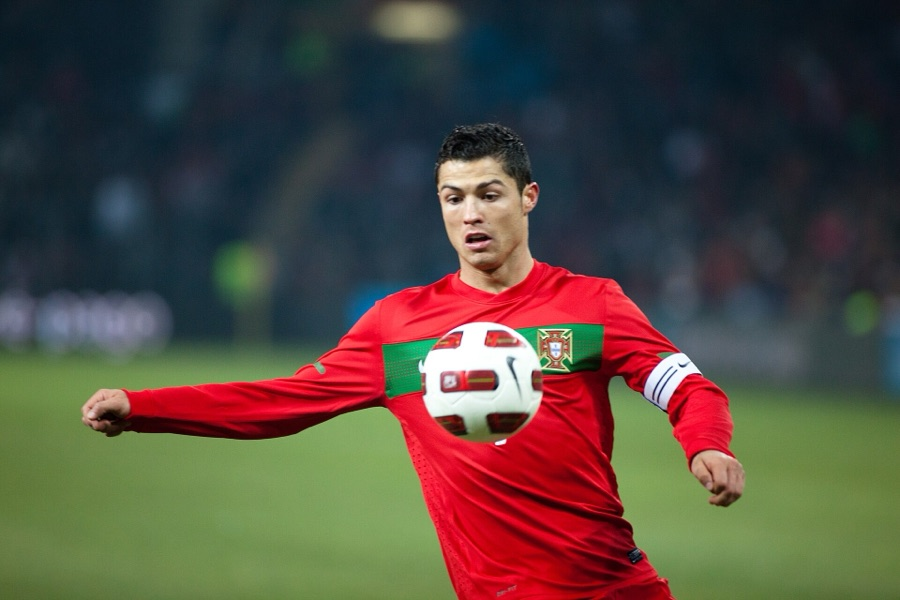

What Is Happening in the Photo
Ronaldo is in Portugal's red home shirt during a night game against Argentina. Both arms are stretched out to balance himself and he is staring down at the white and red ball as it drops in front of his chest, about to bring it under control. The stadium behind him is completely out of focus, so it turns into soft smears of dark green and red and your eye goes straight to him. The photo is 900 by 600 pixels and the file is about 97 KB.
About the JPG Format
JPG (also written JPEG, for Joint Photographic Experts Group) is the format most digital cameras and phones save to, and it is built specifically for photographs.
Key Traits
- Colors: up to about 16.7 million, which is plenty for a real photo
- Compression: lossy, so it permanently throws away detail your eye is unlikely to notice in order to shrink the file
- Transparency: not supported, so a JPG is always a solid rectangle
- Animation: not supported
Why JPG Suits This Image
This is a photograph full of blurred crowd and grass, with thousands of slightly different greens and reds blending into each other. That is exactly the kind of content lossy compression handles well, because losing a tiny bit of detail inside a blur is invisible. There is also nothing here that needs to be see-through, since the photo fills its whole rectangle, so giving up transparency costs me nothing. Saving it as a JPG got the file down to 97 KB, which loads fast.
Why I Chose This Image
Ronaldo is the player who got me into watching soccer in the first place, so I wanted the photo to be him actually playing rather than just posing. I like this one because you can see how much concentration goes into something as ordinary as a first touch. The red Portugal kit against the dark blurry background looks great too, and honestly it is just a cool picture of my favorite player.
Source and Credit
- Photographer: Ludovic Péron
- License: Creative Commons Attribution-ShareAlike 3.0
- Original file page: Argentine - Portugal - Cristiano Ronaldo.jpg on Wikimedia Commons
I resized the original photo to 900 pixels wide and saved it as a JPG. I did not change it in any other way.